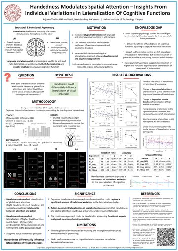

Papers
-
Journal
Jain, Y.*, Chandradoss, K. R.*, Alikkam Veetil, A.*, Bhattacharya, J., Lal, M., Bagadia, M., Singh, H., & Sandhu, K. S. (2021). Convergent evolution of a genomic rearrangement may explain cancer resistance in hystrico- and sciuromorpha rodents. npj Aging and Mechanisms of Disease, 7, 1–15. * Joint first authors.
-
Proceedings
Alikkam Veetil, A., Roy, N., & Verma, A. (2023). Handedness modulates spatial attention – Insights from individual variations in lateralization of cognitive functions. Proceedings of the Annual Meeting of the Cognitive Science Society, 45, 2705–2712. Open access, CC BY 4.0.
-
In prep
Alikkam Veetil, A., & Verma, A. (2026). Individual variation at the perception–action interface: Signed handedness predicts lateralised response initiation and inhibition in hierarchical visual attention.
-
In prep
Alikkam Veetil, A., & Verma, A. (2026). Continuous handedness grades visual-field asymmetry across the visual hierarchy.
-
In prep
Alikkam Veetil, A., & Verma, A. (2026). The Graded Attention–Action Lateralisation Axis: A two-level developmental framework for individual variation in the hemispheric organisation of perception and action.
Talks and posters
- Nov 2024Talk Spatial correlation between disorder-associated alterations of brain structural asymmetry and various neurobiological features. Imaging Genomics Group Meeting, Max Planck Institute for Psycholinguistics, Nijmegen.
- Sep 2023Talk Handedness continuum captures individual variations in lateralization of cognitive functions. ESCOP-2023, University of Porto.
- Jul 2023Poster Handedness modulates spatial attention: Insights from individual variations in lateralization of cognitive functions. CogSci 2023, University of Sydney.
- Dec 2022Poster Does the handedness continuum capture individual variations in the lateralization of cognitive functions? ACCS-2022, IIT Delhi.

